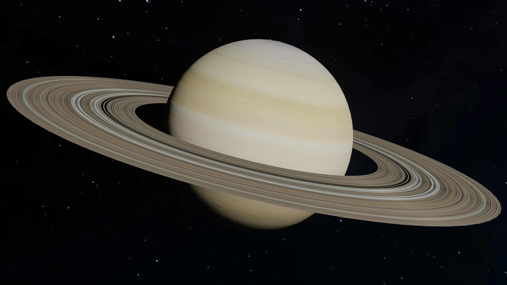

{kind=link}

Dibuat Oleh:
Evan Nizar Destian
Explore the eight worlds that orbit our Sun
Merkurius
adalah planet terdekat dengan Matahari dan merupakan
planet terkecil di tata surya kita. Planet ini memiliki permukaan yang
berbatu dan penuh dengan kawah, mirip dengan Bulan. Merkurius tidak
memiliki atmosfer yang signifikan, sehingga suhu di permukaannya dapat
sangat ekstrem, dengan suhu siang hari mencapai sekitar 430 derajat
Celsius dan suhu malam hari turun hingga -180 derajat Celsius. Meskipun
ukurannya kecil, Merkurius memiliki inti logam yang besar, yang
membuatnya memiliki medan magnet yang kuat dibandingkan dengan planet
lain seukuran itu.
Venus
adalah planet kedua dari Matahari dan sering disebut
"kembaran Bumi" karena ukurannya yang hampir sama, dengan diameter
12.104 km. Namun kemiripan itu hanya sebatas ukuran kondisi di Venus
jauh dari ramah. Atmosfernya yang sangat tebal terdiri dari karbon
dioksida dengan awan asam sulfat, menciptakan efek rumah kaca yang
ekstrem hingga suhu permukaannya mencapai 465°C secara konstan, siang
maupun malam. Yang membuat Venus semakin unik adalah arah rotasinya yang
berlawanan dengan hampir semua planet lain di tata surya. Akibatnya, di
Venus Matahari terbit dari arah barat dan terbenam di timur. Venus juga
berputar sangat lambat satu hari di Venus setara dengan 243 hari Bumi,
lebih lama dari satu tahun Venus yang hanya 225 hari.

Bumi
adalah planet ketiga dari Matahari dan satu-satunya tempat
di alam semesta yang terbukti mendukung kehidupan. Dengan diameter
12.742 km, Bumi memiliki kombinasi sempurna antara jarak dari Matahari,
atmosfer pelindung, dan air cair di permukaan yang memungkinkan
kehidupan berkembang. Suhu rata-ratanya sekitar 15°C, cukup stabil
berkat lapisan atmosfer yang menjaga panas tetap seimbang. Bumi juga
dilindungi oleh medan magnet kuat yang menangkal radiasi berbahaya dari
luar angkasa. Satu tahun Bumi berlangsung selama 365,25 hari, dan
kelebihan seperempat hari inilah yang menjadi alasan adanya tahun
kabisat setiap empat tahun sekali. Bumi adalah satu-satunya planet di
tata surya yang tidak dinamai dari dewa Romawi atau Yunani — namanya
berasal dari kata kuno yang berarti "tanah".

Mars
adalah planet keempat dari Matahari yang dikenal luas
sebagai "Planet Merah" karena warna permukaannya yang khas. Warna merah
keoranye itu berasal dari kandungan oksida besi atau karat yang menutupi
tanah dan debu di permukaannya. Dengan diameter 6.779 km, Mars lebih
kecil dari Bumi, namun memiliki gunung tertinggi di seluruh tata surya
bernama Olympus Mons yang menjulang setinggi 21 kilometer. Suhu
rata-rata di Mars sekitar -60°C, menjadikannya planet yang sangat dingin
dan kering. Meski demikian, Mars adalah planet yang paling banyak
diteliti sebagai calon tempat tinggal manusia di masa depan. Sehari di
Mars hanya selisih sedikit dari Bumi, yakni 24 jam 37 menit. Mars juga
memiliki dua bulan kecil bernama Phobos dan Deimos yang bentuknya tidak
bulat sempurna, mirip batu besar yang tertangkap gravitasi Mars.

Jupiter
adalah planet kelima dari Matahari sekaligus planet
terbesar di tata surya, dengan diameter mencapai 139.820 km. Sebagai
planet gas raksasa, Jupiter tidak memiliki permukaan padat seluruhnya
tersusun dari gas hidrogen dan helium yang semakin memadat ke arah inti.
Massanya begitu besar hingga melebihi dua kali gabungan massa semua
planet lain di tata surya digabungkan. Salah satu ciri paling ikonik
Jupiter adalah Bintik Merah Besar, sebuah badai raksasa yang sudah
berlangsung selama ratusan tahun dan ukurannya lebih besar dari planet
Bumi. Jupiter juga berperan penting sebagai perisai bagi planet-planet
dalam termasuk Bumi gravitasinya yang luar biasa kuat menangkap banyak
asteroid dan komet sebelum sempat mendekati Bumi. Jupiter memiliki
setidaknya 95 bulan yang diketahui, termasuk Ganymede yang merupakan
bulan terbesar di tata surya.

Saturnus
adalah planet keenam dari Matahari yang paling mudah
dikenali berkat cincin-cincinnya yang spektakuler. Cincin itu tersusun
dari miliaran partikel es dan bebatuan dengan berbagai ukuran, dari
sebesar butir pasir hingga sebesar rumah. Dengan diameter 116.460 km,
Saturnus adalah planet terbesar kedua di tata surya, namun kepadatannya
begitu rendah sehingga jika ada lautan yang cukup besar, Saturnus akan
mengapung di atasnya. Saturnus mengorbit Matahari dalam waktu 29,5 tahun
dan memiliki 146 bulan yang diketahui jumlah terbanyak dari semua
planet. Bulan terbesarnya, Titan, sangat istimewa karena memiliki
atmosfer tebal dan danau-danau berisi metana cair di permukaannya,
menjadikannya salah satu tempat paling menarik untuk diteliti dalam
pencarian kehidupan di luar Bumi. Suhu di lapisan awan Saturnus mencapai
-140°C.

Uranus
adalah planet ketujuh dari Matahari dan termasuk kategori
planet es raksasa. Warnanya yang khas biru kehijauan disebabkan oleh
kandungan metana di atmosfernya yang menyerap cahaya merah dan
memantulkan cahaya biru. Dengan diameter 50.724 km, Uranus jauh lebih
besar dari Bumi namun jauh lebih kecil dibanding Jupiter dan Saturnus.
Suhunya yang mencapai -195°C menjadikannya salah satu planet terdingin.
Hal paling aneh dari Uranus adalah kemiringan sumbunya yang mencapai 98
derajat artinya planet ini berputar dalam posisi hampir rebah miring.
Akibatnya, kutub Uranus bergantian menghadap Matahari selama puluhan
tahun. Satu musim di Uranus berlangsung selama 21 tahun Bumi, dan
sepanjang musim itu satu kutub terus-menerus menghadap Matahari
sementara kutub lainnya terbenam dalam kegelapan total.

Neptunus
adalah planet kedelapan sekaligus terjauh dari Matahari
dalam tata surya kita. Jaraknya yang sangat jauh membuat sinar Matahari
membutuhkan waktu sekitar 4 jam untuk sampai ke sana, dibandingkan hanya
8 menit ke Bumi. Warnanya biru tua yang menawan berasal dari kandungan
metana di atmosfernya, mirip Uranus namun dengan warna yang lebih pekat
dan dalam. Suhu di Neptunus mencapai -200°C, menjadikannya salah satu
tempat terdingin di tata surya. Meski letaknya sangat jauh dan dingin,
Neptunus justru memiliki angin tercepat di seluruh tata surya yang bisa
mencapai kecepatan 2.100 km per jam. Planet ini baru ditemukan pada
tahun 1846, dan karena satu tahun Neptunus setara dengan 165 tahun Bumi,
sejak ditemukanpun Neptunus belum genap satu kali menyelesaikan orbitnya
mengelilingi Matahari. Neptunus memiliki 16 bulan yang diketahui, dengan
Triton sebagai yang terbesar salah satu bulan langka yang mengorbit
berlawanan arah dengan rotasi planetnya.